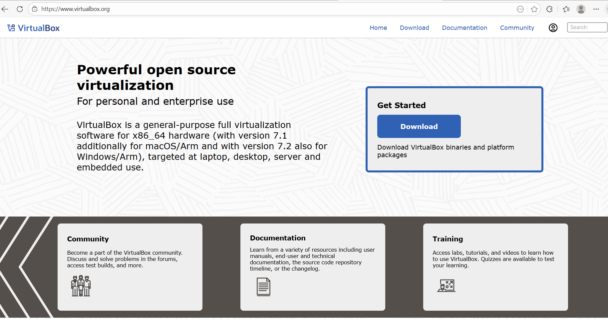
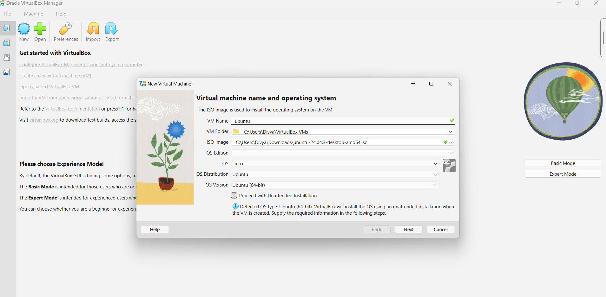
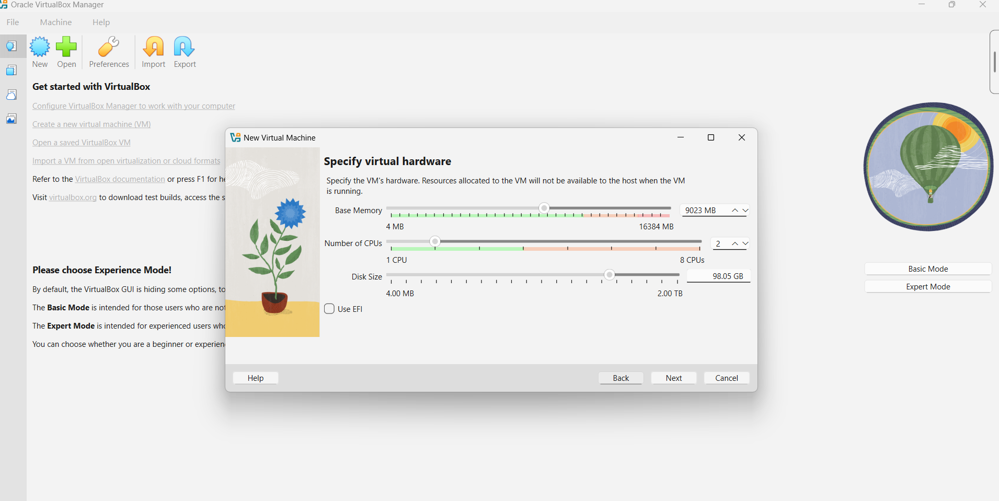
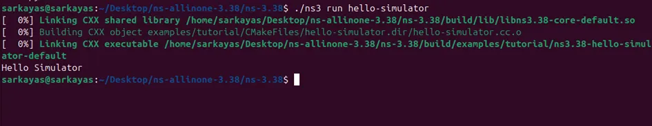

Section 1: VirtualBox Installation
What is VirtualBox?
VirtualBox is an open-source virtualization software developed by Oracle
that allows multiple operating systems to run simultaneously on a single
physical machine using virtual machines.
Why VirtualBox is Required?
- To run Ubuntu Linux on a Windows host system
- To provide an isolated environment for NS-3
- To avoid changes to the host operating system
System Requirements
- 64-bit processor with virtualization support
- Minimum 8 GB RAM (recommended)
- At least 20 GB free disk space
Installation Steps
-
Visit the official website:
https://www.virtualbox.org
and download VirtualBox.
- Run the installer and follow the on-screen instructions.
- Launch VirtualBox after successful installation.

Figure 1: VirtualBox Official Website

Figure 2: VirtualBox Download Page

Figure 3: VirtualBox Manager Interface
Creating Ubuntu Virtual Machine
A new virtual machine is created by selecting the Ubuntu ISO file
and configuring system resources.

Figure 4: Creating Ubuntu Virtual Machine

Figure 5: Allocating RAM, CPU, and Disk Space
Section 2: Ubuntu Installation on VirtualBox
What is Ubuntu?
Ubuntu is a Linux-based open-source operating system widely used for
development, research, and networking applications due to its stability
and extensive package support.
Why Ubuntu for NS-3?
- NS-3 is primarily supported on Linux platforms
- Better dependency and package management
- Stable and secure environment
Ubuntu ISO Download
Ubuntu Desktop ISO can be downloaded from:
https://ubuntu.com

Figure 6: Ubuntu Desktop Download Page
Installation Process

Figure 7: Ubuntu Installation Setup

Figure 8: Ubuntu Desktop Successfully Installed
Post-Installation System Update

Figure 9: Updating Ubuntu System Packages
Section 3: NS-3 Installation
What is NS-3?
NS-3 is a discrete-event network simulator used for research and education
to analyze the behavior and performance of wired and wireless networks.
It is widely used in postgraduate studies and research projects.
Applications of NS-3
- Network protocol analysis
- Wireless and wired network simulations
- Academic and research experimentation
Prerequisites and Dependencies
Before installing NS-3, the system must have required development tools
and libraries installed.
- Ubuntu Linux
- Python 3
- C++ compiler (g++)
- CMake and build-essential packages
Step 1: Download NS-3 Source Code
The NS-3 source code is downloaded from the official NS-3 repository.
This ensures the latest stable version is obtained for installation.

Figure 10: NS-3 Official Download Page
Step 2: Extract NS-3 Source Files
After downloading, the NS-3 source archive is extracted to access
the source code required for building the simulator.

Figure 11: Extracted NS-3 Source Directory
Step 3: Update System and Install Dependencies
The Ubuntu system is updated and required dependencies are installed
to ensure a smooth build process.
sudo apt update
sudo apt install -y git python3 python3-dev cmake g++ build-essential pkg-config

Figure 12: Installing NS-3 Dependencies
Step 4: Configure NS-3
The configuration step checks system compatibility and prepares
NS-3 for compilation.
./ns3 configure --enable-examples --enable-tests

Figure 13: NS-3 Configuration Output
Step 5: Build NS-3
The build process compiles the NS-3 source code and generates
executable simulation binaries.
./ns3 build

Figure 14: NS-3 Build Completed Successfully
Alternative Build Method (ns-allinone)
NS-3 can also be installed using the ns-allinone package,
which automates the download and build process.
cd ns-allinone-3.45
./build.py --enable-examples --enable-tests
⏱ Note: This process may take 15–30 minutes depending
on system specifications.